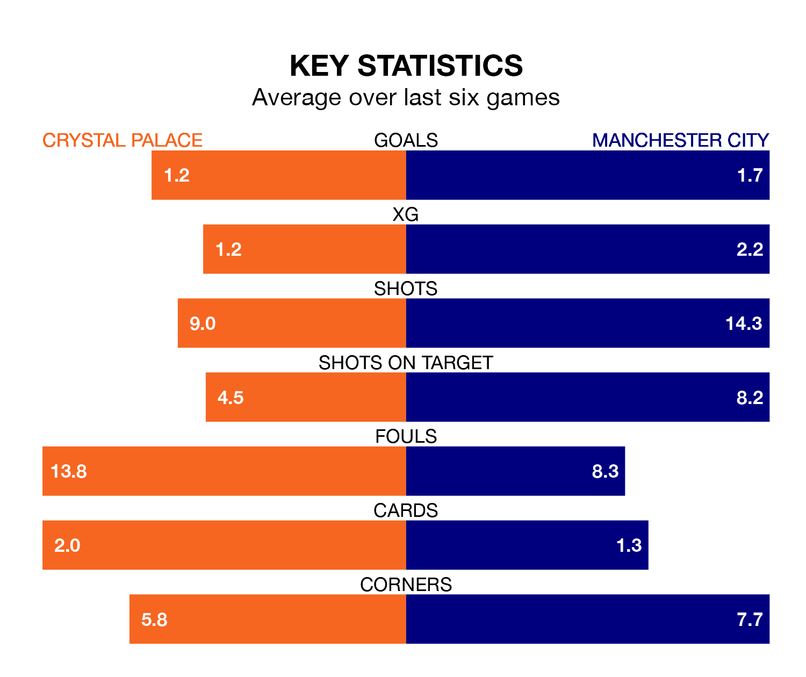

Manchester City are strong favourites to take all three points despite Crystal Palace's home advantage in Saturday lunchtime's match at Selhurst Park.
*Betting Company* are offering odds of 1.36 on City sealing the win, with the visitors sitting third in the Premier League table.
Palace, who are 15th in the league and 37 points behind the Citizens, are priced at 9.5 to win. A draw is set at 5.4.
With 67 goals in 30 games so far this season, City are the league's joint-second-highest scorers with 2.2 goals per game. And they are conceding fewer than average, letting in 29 goals at a rate of 1.0 per game.
Palace, meanwhile, are below average scorers, with 1.1 goals per game, compared to a league average of 1.6. They have conceded 1.7 goals per game.
In Erling Haaland, the Citizens have the league's most on-form striker so far this season. He has notched 18 goals in 24 appearances.
The Eagles's top scorers, with six goals each, are Michael Olise, Odsonne Édouard, Eberechi Eze and Jean-Philippe Mateta.
In the last 10 years, Palace and City have played each other on 22 occasions. Palace won three of them, City 15, and they drew four times.
On average, the Eagles scored 0.7 goals and the Citizens 2.4 in those matches.
Their last meeting was on December 16, when they played out a 2-2 draw.
The hosts are in disappointing form in the Premier League, with one win and three draws from their last six games.
With four wins and two draws over that period, the away team's form is much better – they have taken 14 points from 18, compared to Palace's six.
Palace's last match was on Tuesday, a 1-0 loss against AFC Bournemouth.
City beat Aston Villa 4-1 last time out, on Wednesday, with Phil Foden (three) and Rodri on the scoresheet.
Saturday's match will be refereed by Paul Tierney, who has taken charge of 19 Premier League games so far this season, issuing three red cards and booking 67 players. He has awarded four penalties.
The last Palace game Tierney refereed was a 1-1 away draw with Everton on February 19. His last City match was their 2-2 draw at home against Crystal Palace on December 16.
Updated: 16:41 (UTC), 04/04/24